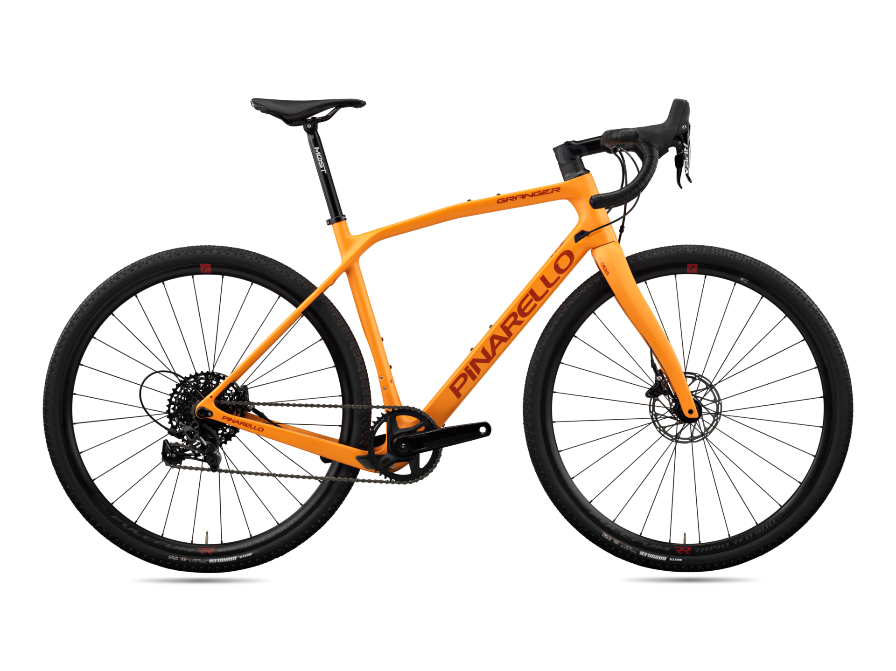
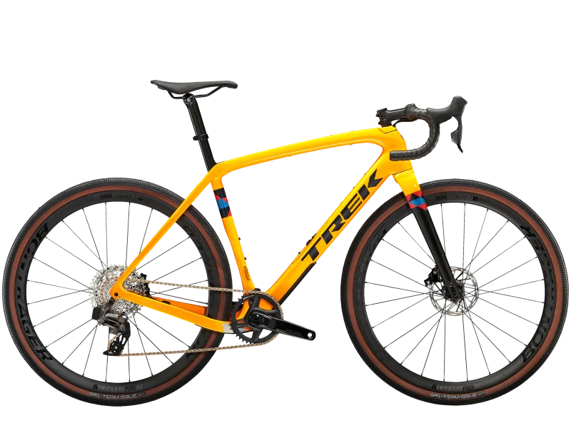
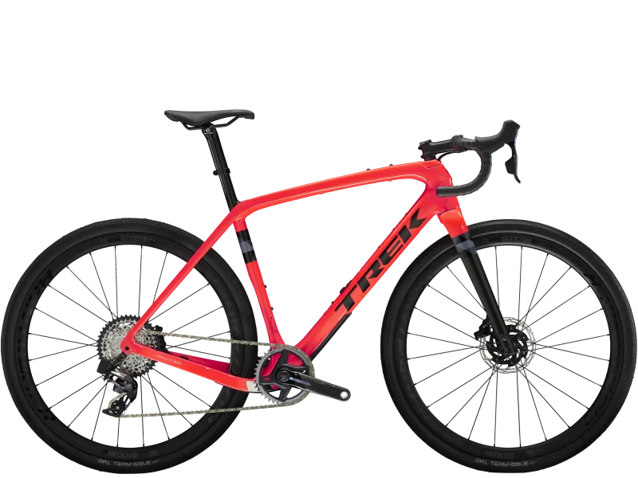
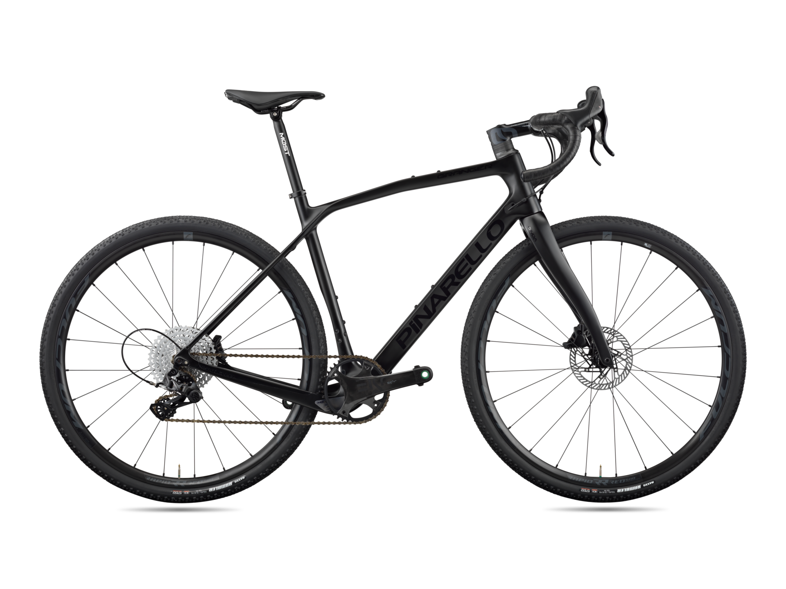
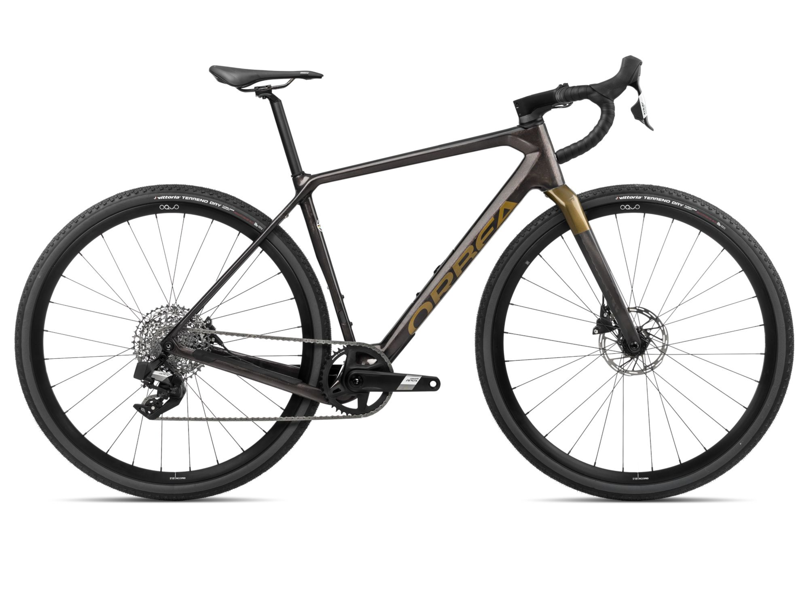
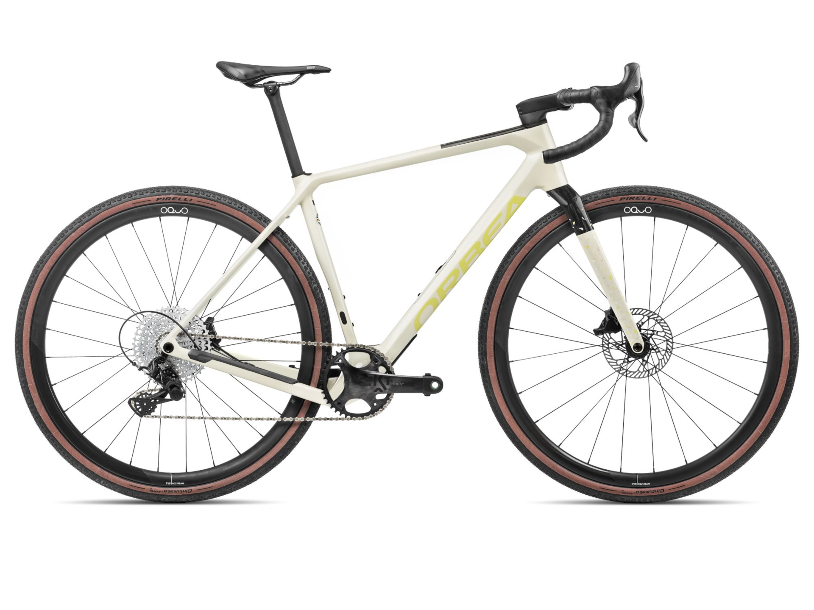

NUESTRAS BICICLETAS






Tenemos las mejores marcas
Las gravel han sido inicialmente pensadas para la aventura y las grandes travesías aunque ha ido en aumento el número de ciclistas que buscan su cara más deportiva y las marcas han desarrollado dos líneas claramente diferenciadas:
- Las bicis de Gravel más cómodas, robustas y aventureras, que responden a su carácter original.
- Y el Gravel deportivo o de competición, con bicis más ligeras, que llegan a competir en peso con las de carretera.
El gran atractivo de ambas radica en la polivalencia para combinar distintos terrenos.